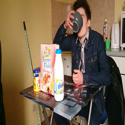

Galerie vidéo
Motion design - mon cv
Mon apprentissage en autodidacte des techniques de motion design m’ont permis de créer cette petite ébauche de mon curriculum vitae. J'ai apprécié découvrir le Motion Design à travers ce projet, c'est pour moi un support incontournable aujourd'hui.
Revisite - The Mentalist
Par le biais de ce montage je propose une version revisitée de la saison 1 de la célèbre série, The Mentalist. Cette version est centrée uniquement sur l’enquête de John le Rouge, elle condense l’enquête principal de la saison en 58 minutes. Cette vidéo a été possible grâce au sous-titre de la JJ Team et de la version originale de LeRalouf, je les remercie !
Publicité Switch - Halo
Parodie d'une pub de Nintendo qui présente le jeu Halo, édité par Microsoft, sur sa nouvelle console hybride, la Switch ! Cette association surprenante et inimaginable a eu l’effet escompté, faire un magnifique poisson d’avril 2017 à mes connaissances ;)
Anime Music Video - This is war
Montage vidéo réalisé durant ma dernière année de collège, dans le cadre du brevet d'histoire des arts. J'ai pris plaisir à relever les différents défis propres au format comme l'harmonisation entre le choix des scènes et la bande son.
Crédits Musicaux: Thirty Seconds To Mars - This Is War
Crédits Anime: One Piece, Naruto, Bleach, Full Metal Alchemist Brotherhood, Hitman reborn
Crédits Musicaux: Thirty Seconds To Mars - This Is War
Crédits Anime: One Piece, Naruto, Bleach, Full Metal Alchemist Brotherhood, Hitman reborn
Best-of - HebDominGo
Best-of hebdomadaire des meilleurs moments du Streamer et Youtuber Français, Domingo. Ce projet a été réalisé suite à la demande de Domingo sur les réseaux sociaux, il respecte les contraintes imposés par ce dernier.

PROJET PERSONNEL PROFESSIONNEL - L'audiovisuel
Court-métrage qui présente trois différents métiers du secteur de l'audiovisuel, le métier de monteur, le métier de réalisateur ainsi que le métier de cascadeur. Cette vidéo a été réalisé dans le cadre d'un projet universitaire qui consistait à présenter des métiers qui nous intéressaient. Le challenge a été de réaliser la pré-production, la production ainsi que la post-production en moins de 24h.